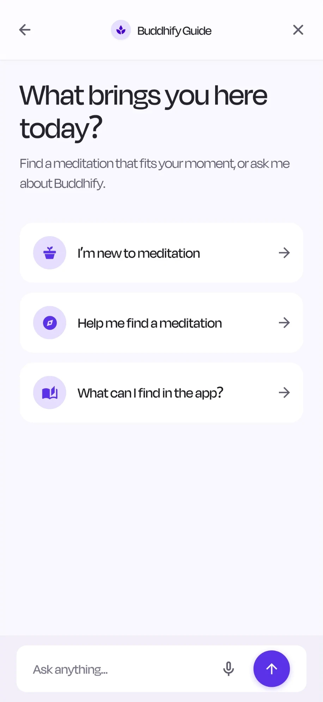

Francesca Cudemo
Ho un debole per le cose belle, soprattutto quando funzionano bene.
Sembrano solo card, eh? Prova a cliccarle.
Ho un debole per le cose belle, soprattutto quando funzionano bene.
Sembrano solo card, eh? Prova a cliccarle.